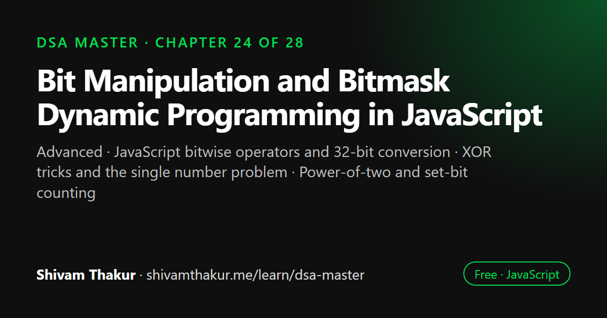

Chapter 24 of 28 · Advanced
Bit Manipulation and Bitmask Dynamic Programming in JavaScript
Bit Manipulation and Bitmask Dynamic Programming

Bit manipulation works directly on the binary digits of integers, which makes some operations far faster and smaller in memory. This chapter is a complete reference to JavaScript's bitwise operators and their 32-bit behaviour, a toolkit of bit tricks such as XOR cancellation and clearing the lowest set bit, how to represent sets as bitmasks, and bitmask dynamic programming.
In this chapter you will learn
- JavaScript bitwise operators and 32-bit conversion
- XOR tricks and the single number problem
- Power-of-two and set-bit counting
- Representing subsets as bitmasks
- Bitmask dynamic programming
24.0 Numbers as Compact Sets: The Idea That Unlocks This Chapter
Chapter 23 previewed the i & (-i) bit trick powering Fenwick Trees. This chapter builds full, genuine fluency with bitwise operations — and introduces the single idea that makes them so powerful for algorithms: a single integer can represent an entire set of small items, with each bit acting as a "yes/no" flag for one item's membership. A 32-bit integer can represent the presence/absence of up to 32 distinct items simultaneously, and — this is the genuinely important part — operations on that entire set (union, intersection, toggling membership) become single, O(1) machine-level operations, instead of O(n) loops over an actual Set (Chapter 4) or array.
24.1 Bitwise Operators: The Complete, Precise Reference
24.1.1 The Six Operators
console.log(5 & 3); // AND: 0101 & 0011 = 0001 = 1
console.log(5 | 3); // OR: 0101 | 0011 = 0111 = 7
console.log(5 ^ 3); // XOR: 0101 ^ 0011 = 0110 = 6
console.log(~5); // NOT: flips every bit -> -6 (two's complement, explained below)
console.log(5 << 1); // LEFT SHIFT: 0101 -> 1010 = 10 (multiply by 2)
console.log(5 >> 1); // RIGHT SHIFT: 0101 -> 0010 = 2 (divide by 2, rounding toward -Infinity)
console.log(-5 >>> 1); // UNSIGNED RIGHT SHIFT: treats -5 as unsigned, shifts in ZEROS from the left24.1.2 >> vs. >>>: The Crucial, Frequently-Tested Distinction
console.log(-8 >> 1); // -4 (SIGNED right shift: preserves the sign bit, fills with 1s for negative numbers)
console.log(-8 >>> 1); // 2147483644 (UNSIGNED right shift: treats -8's bit pattern as if it were a
// large POSITIVE number, fills with 0s regardless of original sign)24.2 The Bit-Trick Toolkit: A Reference You'll Use Constantly
24.2.1 Check if the i-th Bit Is Set
function isBitSet(num, i) {
return (num & (1 << i)) !== 0;
}24.2.2 Set the i-th Bit
function setBit(num, i) {
return num | (1 << i);
}24.2.3 Clear (Unset) the i-th Bit
function clearBit(num, i) {
return num & ~(1 << i);
}24.2.4 Toggle the i-th Bit
function toggleBit(num, i) {
return num ^ (1 << i);
}24.2.5 Check if a Number Is a Power of Two
function isPowerOfTwo(num) {
return num > 0 && (num & (num - 1)) === 0;
}24.2.6 Count the Number of Set Bits (Popcount)
function countSetBits(num) {
let count = 0;
while (num !== 0) {
num &= (num - 1); // clears the LOWEST set bit each iteration — the exact trick from 24.2.5!
count++;
}
return count;
}
console.log(countSetBits(13)); // 13 = 1101 -> 3 set bits24.2.7 The XOR Trick Family: Finding "The One That's Different"
Core XOR properties, worth memorizing as a group: x ^ x = 0 (anything XORed with itself cancels to zero), x ^ 0 = x (XOR with zero is a no-op), and XOR is both commutative and associative (order and grouping don't matter).
function findSingleNumber(nums) {
// Every number appears TWICE except for one — find the one that appears ONCE.
let result = 0;
for (const num of nums) {
result ^= num; // every PAIR cancels to 0 (x^x=0); whatever's left is the unpaired number!
}
return result;
}
console.log(findSingleNumber([4, 1, 2, 1, 2])); // 4Dry Run
nums = [4, 1, 2, 1, 2]
result = 0
result ^= 4 -> result = 4 (0100)
result ^= 1 -> result = 5 (0101)
result ^= 2 -> result = 7 (0111)
result ^= 1 -> result = 6 (0110) <- the two 1's have now cancelled out (4^1^1 = 4)
result ^= 2 -> result = 4 (0100) <- the two 2's have now cancelled out too!
Final result = 4 ✓ (the single, unpaired number)24.3 Bitmask Representation of Sets: The Foundation for Bitmask DP
The Core Translation Table
A set of n items (where n is small, typically ≤ 20-25 for practical DP purposes) can be represented as an integer from 0 to 2^n - 1, where bit i being set means "item i is included in this set."
Set {0, 2, 3} out of items {0, 1, 2, 3} -> bitmask 1101 (binary) = 13 (decimal)
^ ^ ^
item 3 2 0 are set; item 1 is not
Set operations, as bitwise operations:
Union: maskA | maskB
Intersection: maskA & maskB
Add item i: mask | (1 << i)
Remove item i: mask & ~(1 << i)
Is item i in the set?: (mask & (1 << i)) !== 0
Is set A a SUBSET of set B?: (maskA & maskB) === maskA24.4 Bitmask Dynamic Programming: A New State Dimension
The Core Insight: Using a Bitmask as a DP State, Directly Extending Chapters 18-19
Recall Chapter 18's five-step framework: define the sub-problem, write the recurrence, identify base cases, choose top-down/bottom-up, locate the answer. Bitmask DP is the exact same framework — the only new idea is that the sub-problem's "position" or "state" is now (at least partly) a bitmask representing which items have been used/visited/included so far, rather than a single integer index.
24.4.1 Worked Example: Traveling Salesman Problem (TSP), Small-Scale
The problem: given n cities and pairwise distances, find the shortest possible route that visits every city exactly once and returns to the start.
Applying the Five-Step Framework
- Define the sub-problem:
f(mask, i)= the minimum cost to visit exactly the set of cities represented bymask, ending at cityi. - Recurrence: to arrive at city
ihaving visited the setmask, we must have come from some cityj(also inmask, but withiexcluded from the "previous" state) via the cheapest such predecessor:f(mask, i) = min(f(mask without i, j) + dist(j, i))for everyjinmaskwherej != i. - Base case:
f({start}, start) = 0(visiting only the starting city, already there, costs nothing). - Bottom-up (iterating masks in increasing numeric order naturally processes smaller subsets before larger ones that build on them).
- Answer location:
min(f(fullMask, i) + dist(i, start))across all citiesi— the cheapest way to have visited everyone and return home.
function tsp(dist) {
const n = dist.length;
const fullMask = (1 << n) - 1;
const dp = Array.from({ length: 1 << n }, () => new Array(n).fill(Infinity));
dp[1][0] = 0; // mask=1 (binary ...0001) means "only city 0 visited," ending at city 0
for (let mask = 1; mask <= fullMask; mask++) {
for (let i = 0; i < n; i++) {
if (!(mask & (1 << i))) continue; // city i must be IN this mask to be the "ending" city
if (dp[mask][i] === Infinity) continue; // this state is unreachable — skip
for (let next = 0; next < n; next++) {
if (mask & (1 << next)) continue; // `next` must NOT already be visited
const newMask = mask | (1 << next);
const newCost = dp[mask][i] + dist[i][next];
if (newCost < dp[newMask][next]) {
dp[newMask][next] = newCost;
}
}
}
}
let minCost = Infinity;
for (let i = 1; i < n; i++) {
if (dp[fullMask][i] !== Infinity) {
minCost = Math.min(minCost, dp[fullMask][i] + dist[i][0]); // return to the start!
}
}
return minCost;
}24.4.2 A Second, Simpler Worked Example: Can We Partition Into Two Equal-Sum Subsets?
We solved this conceptually in Chapter 19's coding problems using subset-sum DP indexed by achievable sums. Here's the bitmask-DP framing for a small number of items, useful specifically when you need to track which specific items were used, not just whether a sum is achievable:
function canPartitionBitmask(nums) {
const n = nums.length;
const totalSum = nums.reduce((a, b) => a + b, 0);
if (totalSum % 2 !== 0) return false;
const target = totalSum / 2;
const sumForMask = new Array(1 << n).fill(0);
for (let mask = 1; mask < (1 << n); mask++) {
const lowestSetBit = mask & (-mask); // Chapter 23's Fenwick Tree trick, reused here!
const lowestIndex = Math.log2(lowestSetBit);
sumForMask[mask] = sumForMask[mask ^ lowestSetBit] + nums[lowestIndex];
if (sumForMask[mask] === target) return true;
}
return false;
}24.5 Edge Cases and Gotchas Checklist for Bit Manipulation Problems
- 32-bit signed integer conversion — always remember bitwise operators truncate to 32 bits internally; verify your numbers stay within
Number.MAX_SAFE_INTEGER-adjacent-but-still-32-bit-safe ranges for correctness. >>vs.>>>confusion — always double-check which shift you actually need, especially with negative numbers or numbers that might be interpreted as such.- Off-by-one in bit position indexing — always verify whether "bit 0" means the least significant bit (the overwhelming convention in this chapter) or the most significant, and stay consistent.
- Bitmask DP array sizing —
1 << nfornup to ~25 is fine; verify this doesn't silently overflow or become impractically large for a given problem's actual constraints. - Negative numbers and bitwise operations — two's complement representation means negative numbers have "all high bits set," which can produce surprising results in bit-counting or bit-position functions if not explicitly handled.
- Empty bitmask (
0) as a valid state — verify your DP base cases and iteration correctly handle the "no items selected yet" state, typicallymask = 0, distinctly from an "invalid/unreachable" state.
24.6 Chapter Summary
This chapter built genuine fluency with bitwise operations, opening with the precise mechanics often glossed over: JavaScript's bitwise operators convert operands to 32-bit signed integers internally, a fact with real consequences for large numbers, and the specifically JavaScript-relevant, frequently-tested distinction between >> (signed, sign-preserving) and >>> (unsigned, always zero-filling) right shifts. We built a complete bit-trick toolkit — checking, setting, clearing, and toggling individual bits, testing for powers of two via the num & (num-1) lowest-set-bit-clearing trick, and Brian Kernighan's algorithm for counting set bits by repeatedly applying that same trick — establishing num & (num-1) as a genuinely reusable technique worth recognizing on sight, not a one-off formula.
We covered the XOR trick family, anchored by the memorable core properties x^x=0 and x^0=x, and demonstrated their power directly via the "find the single non-duplicated element" problem — an O(n) time, O(1) space solution that elegantly outperforms a Set-based approach (Chapter 4) purely through cancellation, a genuinely beautiful illustration of bit tricks succeeding where hash-based approaches would need extra memory. We then built the chapter's central idea: an integer can represent an entire small set, turning set operations (union, intersection, membership testing) into single O(1) bitwise operations — the direct foundation for everything that followed.
This culminated in Bitmask Dynamic Programming, which we were careful to frame not as a new technique but as Chapter 18's five-step DP framework with one new twist: the sub-problem's state now includes a bitmask tracking exactly which items have been used/visited so far, worked through fully via the Traveling Salesman Problem, where bitmask DP's O(n²·2ⁿ) dramatically beats brute-force permutation's O(n!) — while being explicit that this technique only remains practical for small, fixed n (roughly ≤20-25), since 2ⁿ growth is still exponential, just with a much smaller, more forgiving base than pure permutation counting. We closed with a genuinely satisfying cross-chapter callback: the exact mask & (-mask) lowest-set-bit trick powering Chapter 23's Fenwick Tree reappearing, recognizably, inside a bitmask-DP subset-sum tracking solution — concrete proof that a bit-manipulation technique learned deeply in one context transfers directly to a completely different problem domain, exactly the pattern-transfer skill this entire book has been built to cultivate.
24.7 Revision Notes
- JavaScript's bitwise operators convert operands to 32-bit signed integers internally — a real consequence for large numbers and negative-number behavior.
>>(signed, sign-preserving) versus>>>(unsigned, always zero-filling) is a specifically JavaScript-relevant, frequently-tested distinction.num & (num-1)clears the lowest set bit — the foundation for power-of-two checking and Brian Kernighan's bit-counting algorithm.- XOR's core properties (
x^x=0,x^0=x) power elegant O(n)-time, O(1)-space solutions like "find the single non-duplicated element," beating hash-based (Chapter 4) alternatives on space. - An integer can represent an entire small set — union, intersection, and membership testing all become O(1) bitwise operations.
- Bitmask DP extends Chapter 18's five-step framework by making the state include a bitmask of used/visited items — TSP's O(n²·2ⁿ) dramatically beats brute-force O(n!), but remains practical only for small, fixed n (roughly ≤20-25).
- Bit-manipulation techniques transfer directly across contexts — the
mask & (-mask)trick from Chapter 23's Fenwick Tree reappears recognizably in bitmask-DP subset-sum tracking.
24.8 Mind Map (ASCII)
BIT MANIPULATION & BITMASK DP
|
+------------------+-------+-------+------------------------+
| | | |
OPERATOR BIT-TRICK XOR TRICK BITMASK DP
PRECISION TOOLKIT FAMILY |
| | | Ch.18's 5-step
JS converts to isBitSet/setBit/ x^x=0, x^0=x framework, state
32-bit signed clearBit/ (cancellation) now INCLUDES a
ints internally toggleBit | BITMASK of
| | findSingleNumber: used/visited items
>> (signed, num & (num-1) O(n) time, O(1) |
sign-preserving) clears LOWEST space -- beats TSP: f(mask,i) =
vs >>> (unsigned, set bit Set-based (Ch.4) min cost ending
always zero-fill) | O(n) space at i, having
-- JS-SPECIFIC isPowerOfTwo, | visited exactly
frequently tested Brian Kernighan's "everything appears `mask`
popcount algo twice except one" |
~x = -(x+1) = XOR signal O(n^2 * 2^n) beats
(two's complement) brute-force O(n!)
(but only n<=20-25!)
|
mask & (-mask)
REAPPEARS from
Ch.23's Fenwick
Tree -- same trick,
different domain!24.9 Cheat Sheet
BITWISE OPERATORS
=====================
& AND | OR ^ XOR ~ NOT (= -(x+1))
<< left shift (*2) >> signed right shift (/2, sign-preserving)
>>> unsigned right shift (always zero-fills, treats as unsigned)
JS GOTCHA: all bitwise ops convert to 32-bit SIGNED integers first!
BIT TRICK TOOLKIT
=====================
isBitSet(n,i): (n & (1<<i)) !== 0
setBit(n,i): n | (1<<i)
clearBit(n,i): n & ~(1<<i)
toggleBit(n,i): n ^ (1<<i)
isPowerOfTwo(n): n > 0 && (n & (n-1)) === 0
countSetBits(n): while(n){ n &= (n-1); count++ } [Brian Kernighan's algorithm]
lowest set bit: n & (-n) [Ch.23 Fenwick Tree trick, reused everywhere]
XOR PROPERTIES
=================
x ^ x = 0 x ^ 0 = x commutative & associative (order doesn't matter)
"find the single non-duplicate" -> XOR everything, pairs cancel, answer remains
BITMASK AS A SET
===================
Union: maskA | maskB
Intersection: maskA & maskB
Add item i: mask | (1<<i)
Remove item i: mask & ~(1<<i)
Subset check: (maskA & maskB) === maskA
BITMASK DP TEMPLATE
=======================
dp[mask][i] = best value achievable having used exactly the items in `mask`,
currently "at" or "ending with" item i
Iterate masks 0 to 2^n - 1; for each valid (mask,i), try transitioning to
every unused item `next`: newMask = mask | (1<<next)
ONLY practical for n <= ~20-25 (2^n growth, though far better than n!)24.10 Key Takeaways
- JavaScript's bitwise operators convert to 32-bit signed integers internally — know this and the
>>vs>>>distinction cold. num & (num-1)clears the lowest set bit — the foundation for power-of-two checks, Brian Kernighan's popcount, and (from Chapter 23) Fenwick Tree indexing.- XOR's cancellation property (
x^x=0) enables elegant O(1)-space solutions that outperform hash-based alternatives for specific "find the odd one out" problem shapes. - An integer can represent an entire small set — set operations become single O(1) bitwise operations.
- Bitmask DP extends the standard DP framework with a bitmask state dimension, making previously-infeasible O(n!) problems tractable at O(n²·2ⁿ) — but only for small, fixed n.
24.11 20 Multiple Choice Questions
Tap an answer to check it. Your score updates as you go.
Score: 0 / 0 answered (20 questions)
What do JavaScript's bitwise operators do to their operands before performing the operation?
What is the difference between
>>and>>>in JavaScript?What does
~xequal, mathematically?What does the expression
num & (num - 1)do?What algorithm uses
num & (num-1)repeatedly to count set bits?What is the time complexity of Brian Kernighan's bit-counting algorithm?
What core XOR property enables the "find the single non-duplicate number" solution?
What is the time and space complexity of the XOR-based "find the single number" solution?
How can an integer represent an entire set of small items?
What bitwise operation represents the UNION of two sets represented as bitmasks?
What bitwise operation represents the INTERSECTION of two sets represented as bitmasks?
What does bitmask Dynamic Programming add to the standard five-step DP framework from Chapter 18?
What is the time complexity of the bitmask DP solution to the Traveling Salesman Problem, for n cities?
How does bitmask DP's complexity for TSP compare to brute-force permutation checking?
What is the practical limit on
nfor bitmask DP to remain feasible?What earlier chapter's specific bit trick reappears in the bitmask-DP subset-sum example (section 24.4.2)?
What should you verify before committing to a bitmask DP approach for a new problem?
What does
mask & (-mask)compute?Why is bit manipulation's O(1) set-operation performance an advantage over a Set object (Chapter 4) for small, fixed-size collections?
What is a genuine risk of misapplying bitmask DP to a problem with too many items?
Show the answer key
1-b, 2-b, 3-b, 4-b, 5-b, 6-b, 7-b, 8-b, 9-b, 10-b, 11-b, 12-b, 13-b, 14-b, 15-b, 16-b, 17-b, 18-b, 19-b, 20-b
24.12 20 Coding Problems
Easy
- Implement
isBitSet,setBit,clearBit, andtoggleBitfrom memory (section 24.2). - Implement
isPowerOfTwofrom memory (section 24.2.5), and test it against a range of numbers including edge cases (0, 1, negative numbers). - Implement
countSetBits(Brian Kernighan's algorithm) from memory (section 24.2.6). - Implement
findSingleNumberfrom memory (section 24.3), and verify it works correctly on an array where the "single" number is negative. - Write a function to reverse the bits of a 32-bit integer.
Medium
- Given an array where every number appears three times except one, find the single number that appears only once (a trickier variant of XOR-based single-number finding, requiring bit-counting per position instead of simple XOR).
- Given two integers, find the number of bits you'd need to flip to convert one into the other (the "Hamming distance").
- Implement a function to generate all subsets of a set using bitmask iteration (0 to 2^n - 1), rather than Chapter 17's recursive backtracking approach — compare the two approaches in a comment.
- Given a small set of items with weights and values, implement bitmask DP to solve a variant of the 0/1 Knapsack problem (Chapter 19) where you specifically need to know WHICH items were selected, not just the total value.
- Implement the
getAllSubsetMasksfunction from memory (section 24.3), and verify it correctly enumerates every subset of a given bitmask.
Hard
- Implement the full TSP bitmask DP solution (
tspfunction) from memory (section 24.4.1), and verify it against a brute-force permutation-based solution (Chapter 17) on a small (4-5 city) test case. - Given a list of tasks each requiring a specific subset of skills, and a list of workers each possessing a specific subset of skills, use bitmask DP to determine the minimum number of workers needed to cover all required skills across all tasks.
- Implement "Partition to K Equal Sum Subsets" using bitmask DP, determining if an array can be partitioned into k subsets each summing to the same target value.
- Given a small graph (n <= 20 vertices), use bitmask DP to solve the "Hamiltonian Path" problem: does a path exist that visits every vertex exactly once?
- Implement a bitmask-DP solution to the "Assignment Problem": given n workers and n tasks with costs for each worker-task pairing, find the minimum-cost complete assignment (each worker to exactly one task).
Interview Level
- (Google-level) Given a small set of servers (n <= 20) each with specific capability flags (represented as bitmasks), design a system to efficiently find the minimum number of servers needed to cover a required set of capabilities, using bitmask DP.
- (Amazon-level) Given a small delivery route optimization problem (n <= 15 delivery stops), implement the TSP bitmask DP solution to find the optimal route, and discuss in comments why this wouldn't scale to hundreds of stops (connecting back to the n<=20-25 practical limit).
- (Microsoft-level) Given a feature flag system where each user's enabled features are represented as a bitmask, implement efficient bitwise operations to determine feature overlap between user cohorts, feature adoption rates, and cohort intersection sizes.
- (Meta-level) Given a small set of content categories (n <= 20) and a user's viewing history represented as a bitmask, use bitmask DP to determine the minimum number of "recommendation sessions" needed to expose the user to all categories, given constraints on categories per session.
- (Netflix-level) Design an A/B testing feature-flag combination tracker, using bitmasks to represent which experimental features are active for a given user session, and implement efficient bitwise queries for "how many users have EXACTLY this combination of features enabled" and "how many users have AT LEAST this subset of features enabled" (a subset-check query).
24.13 5 Interview Questions
- "What's the difference between
>>and>>>in JavaScript, and when would each matter?" (Tests specific, JavaScript-relevant bitwise knowledge.) - "How would you count the number of set bits in an integer efficiently?" (Tests Brian Kernighan's algorithm and the underlying
num & (num-1)trick.) - "Given an array where every element appears twice except one, find the unique element in O(1) space." (Tests the XOR cancellation trick and its space advantage over hashing.)
- "How would you represent a small set of items as an integer, and what operations become possible?" (Tests bitmask-as-set fluency.)
- "How would you solve the Traveling Salesman Problem for a small number of cities more efficiently than brute force?" (Tests bitmask DP and the O(n²·2ⁿ) vs O(n!) comparison.)
24.14 3 Real Projects
- Complete Bit Manipulation Toolkit: Implement every bit trick from this chapter (bit checking/setting/clearing/toggling, power-of-two check, Brian Kernighan's popcount, XOR single-number finder) in a single library, with a self-check script verifying correctness across randomized and edge-case (0, negative,
Number.MAX_SAFE_INTEGER-adjacent) inputs. - TSP Solver with Benchmark: Build the full bitmask-DP TSP solution and benchmark it against a brute-force permutation-based solution (Chapter 17) at increasing city counts, empirically demonstrating the point at which brute force becomes infeasible while bitmask DP remains practical.
- Feature Flag Bitmask Manager: Build a small module representing user feature-flag combinations as bitmasks, supporting efficient union/intersection/subset queries across large numbers of users, and benchmark it against an equivalent
Set-based (Chapter 4) implementation to empirically demonstrate the performance advantage for small, fixed-size flag collections.
24.15 Further Reading
- Henry S. Warren Jr., Hacker's Delight — the definitive, comprehensive reference on bit manipulation tricks, covering dozens of techniques beyond this chapter's core selection.
- Search "Brian Kernighan bit counting trick" for the algorithm's origin and additional variants.
- Search "bitmask dynamic programming competitive programming" for extensive additional problem sets built around the technique introduced in section 24.4.
- LeetCode's "Bit Manipulation" and "Bitmask" problem tags, for extensive additional practice directly extending this chapter's techniques.
Bit Manipulation & Bitmask DP in JavaScript: frequently asked questions
How do bitwise operators work in JavaScript?
JavaScript converts both operands to 32-bit signed integers, applies the operation bit by bit, and converts the result back to a number. That means bitwise operations on numbers larger than 2³¹ − 1 give unexpected results unless you use BigInt.
What is the difference between >> and >>> in JavaScript?
Both shift bits to the right. >> is a signed shift that copies the sign bit, so negative numbers stay negative; >>> is an unsigned shift that fills with zeros and always returns a non-negative number.
How do you check if a number is a power of two?
n > 0 && (n & (n - 1)) === 0. A power of two has exactly one set bit, and n & (n - 1) clears the lowest set bit, leaving zero only in that case.
What is bitmask dynamic programming?
Bitmask DP uses an integer as part of the DP state to record which items of a small set have been used, for example which cities are visited in the travelling salesman problem. It turns an O(n!) search into roughly O(n² × 2ⁿ), which is practical for n up to about 20.